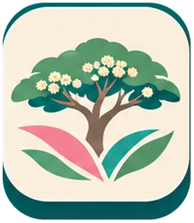
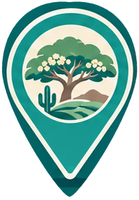
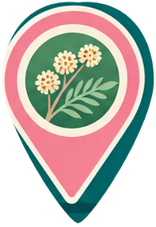

Nutriendo Futuros · Mezquite
Seis recursos recuperados directamente de la propuesta B aprobada, con sus raíces, flores y colores originales.
Árbol principal
 Guardar recurso
Guardar recursoSello del visor
 Guardar recurso
Guardar recursoIcono móvil turquesa
 Guardar recurso
Guardar recursoIcono móvil crema

Guardar recurso
Marcador turquesa

Guardar recurso
Marcador rosa

Guardar recurso